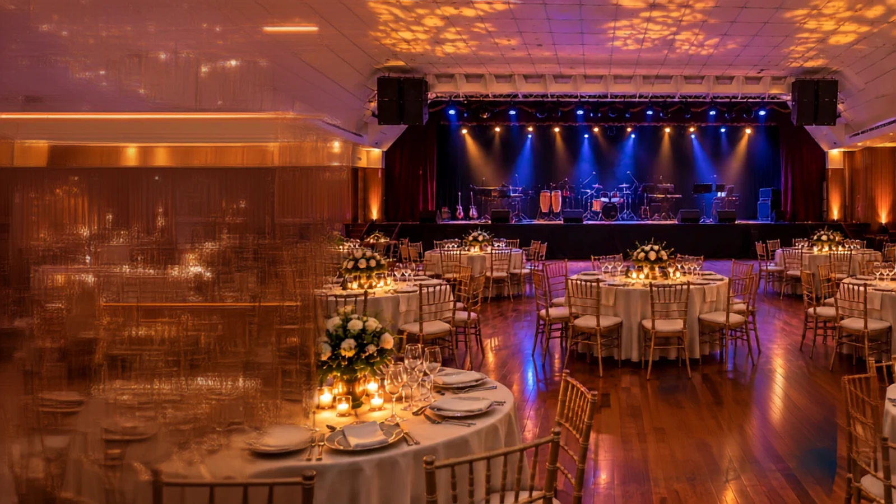

21 DE NOVIEMBRE DE 2026
UN FESTIVAL.
TODA LA
FAMILIA.
Deporte que nos une.
Diversión para compartir.
Salesianos y María Auxiliadora.
Todas las promociones. Todas las generaciones.
01 / LA EXPERIENCIA
UN DÍA.
MIL FORMAS DE REENCONTRARNOS.
La misma pasión. Una nueva forma de vivirla.
De la cancha a la mesa, y de la mesa a la pista. Reúne a tu promoción y disfruta el campeonato, la familia y la fiesta sin cambiar de lugar.
LA PASIÓN
NOS REÚNE.
El campeonato de tu promoción.
LA FAMILIA
SE ENCUENTRA.
Hay un lugar para todos.

03LA HISTORIA
CONTINÚA.
DJ, orquesta y una gran noche.
LA FAMILIA SIGUE CRECIENDO
ELLOS YA DIJERON
¡PRESENTE!
La próxima foto puede ser la de tu promoción.
Estas siete promociones ya recibieron la bienvenida oficial al Salesianos FEST. Comparte el anuncio de tu promoción y haz que el reencuentro empiece desde hoy.
LA HISTORIA
SE COMPLETA
CONTIGO.
Reúne a tu equipo y súmense al festival.
QUIERO PARTICIPAR ↗02 / EL CAMPEONATO
LA CAMISETA
SE VUELVE
A SENTIR.
Los amigos de siempre. La emoción de competir otra vez. Fútbol 7, vóley mixto y básquet en una jornada para alentar, compartir y celebrar.
Fútbol 7 · Masculino y femenino
4 canchas de grass sintético. Equipos con un mínimo de 7 integrantes.
21 NOVIEMBRE / ORGANIZA TU DÍA
DESDE EL PRIMER SALUDO
HASTA EL ÚLTIMO BAILE.
Bienvenida
Nos reunimos con nuestra promoción.
Inauguración
La familia salesiana abre el festival.
¡A la cancha!
Inicio de partidos y jornada deportiva.
Deporte → fiesta
Finalizan los partidos. Empieza la celebración.
Premiación
Celebramos a los equipos durante la fiesta.
Categorías del campeonato ＋
Júnior
Promociones 2012–2025
Sénior
Promociones 1998–2011
Máster
Promociones 1985–1997
Súper Máster
Promociones 1970–1984
La organización puede reconfigurar las categorías para maximizar el número de partidos de cada promoción, según el cronograma publicado.
03 / EN FAMILIA
EL MEJOR PLAN:
ESTAR JUNTOS.
Ven con los tuyos. Entre partido y partido, hay tiempo para conversar, compartir algo rico y crear nuevos recuerdos.
- 01Zona campestre y espacios para compartir
- 02Venta de alimentos y bebidas
- 03Juegos, gincanas y actividades familiares
- 04Patio de juegos para niños
04 / LA GRAN FIESTA
CAE LA NOCHE.
SUBE LA EMOCIÓN.
Del campeonato a la fiesta. Sin cambiar de lugar.
Nos encontramos en el salón de eventos de la AOP para seguir escribiendo nuestra historia.
Artistas y programación detallada por anunciar. Imagen de la propuesta del festival.
05 / ELIGE CÓMO VIVIRLO
TU PROMOCIÓN.
TU PLAN.
Compite, celebra o hazlo todo.
Compara lo que incluye cada opción y continúa tu inscripción en la plataforma del festival.
Precios según las publicaciones oficiales. Confirma disponibilidad y condiciones con la organización antes de pagar.
Ya tengo una cuenta ↗Preventa
Hasta el 25 de octubre
Cierre: 8:00 p. m.
Regular
26 de octubre al 8 de noviembre
Cierre: 8:00 p. m.
Extemporánea
9 al 18 de noviembre
Cierre: 8:00 p. m.
El torneo toma forma
Sorteo: 19 nov · 6:00 p. m.
Fixture: 20 nov · 10:00 p. m.
TU PASE PARA
REENCONTRARNOS.
DJ, orquesta y tus amigos de siempre.
Hasta el 25 de octubre
Precio anunciado en puerta: S/ 35 por persona.
REÚNE A TU PROMOCIÓN.
NOS VEMOS EN EL FEST.
o paquete.
registra tu equipo.
en la plataforma oficial.
06 / TRANSMISIÓN EN VIVO
LA DISTANCIA
NO NOS SEPARA.
Sigue el campeonato, las entrevistas y los momentos del festival desde donde estés. La familia salesiana siempre encuentra la forma de estar cerca.
El enlace y los horarios de transmisión se anunciarán por los canales oficiales.
07 / NUESTRO PUNTO DE ENCUENTRO
UN LUGAR.
TODA LA EXPERIENCIA.
ASOCIACIÓN
OKINAWENSE
DEL PERÚ
Av. Asturias s/n · Ate, Lima
Ven con tranquilidad
Seguridad permanente y ambulancia con paramédicos previstas en el programa.
Llega y quédate
Amplio estacionamiento con tarifa plana durante todo el evento.
Todo a tu alcance
Tribunas techadas, servicios higiénicos, duchas y camerinos.
08 / AUSPICIADORES Y ALIADOS
GRANDES REENCUENTROS.
GRANDES ALIADOS.
Un espacio para las marcas que quieren acompañar a nuestra comunidad y ser parte de una celebración que une generaciones.
Tu marca también
tiene un lugar aquí.
Los auspiciadores confirmados se anunciarán en este espacio.
ANTES DE VERNOS
TODO LO QUE
QUIERES SABER.
¿Quiénes pueden participar?＋
El festival convoca a las promociones de Salesianos y María Auxiliadora, junto a sus familias. Para participar en las competencias, revisa las bases y condiciones de inscripción en la plataforma oficial.
¿El campeonato y la fiesta son en el mismo lugar?＋
Sí. Las actividades deportivas, la zona familiar y la fiesta se desarrollan en el complejo de la Asociación Okinawense del Perú. La celebración nocturna es en su salón de eventos.
¿Qué incluyen los paquetes?＋
Los paquetes combinan inscripción deportiva y pases a la fiesta. Dúo y Trío incluyen acceso a un box exclusivo y una caja de cerveza, según el programa. Revisa el detalle de cada opción; la venta de bebidas alcohólicas es solo para mayores de edad.
¿Puedo asistir solo a la fiesta?＋
Sí. El anuncio oficial ofrece un pase individual: S/ 25 en preventa hasta el 25 de octubre y S/ 35 en puerta. Consulta la disponibilidad vigente con la organización.
¿Habrá actividades para niños?＋
Sí. La propuesta incluye espacios familiares, juegos y gincanas. El acceso al patio de juegos infantiles está sujeto a pago o disponibilidad.
¿Dónde podré ver la transmisión en vivo?＋
Desde el botón «En vivo» de la parte superior. El reproductor se habilitará cuando se anuncie el enlace oficial. Mientras tanto, puedes guardar la fecha y seguir las novedades del festival.